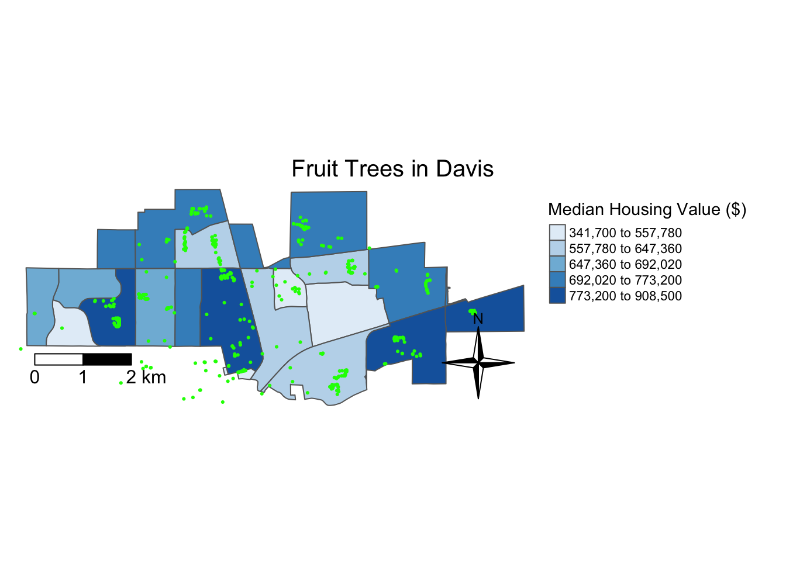
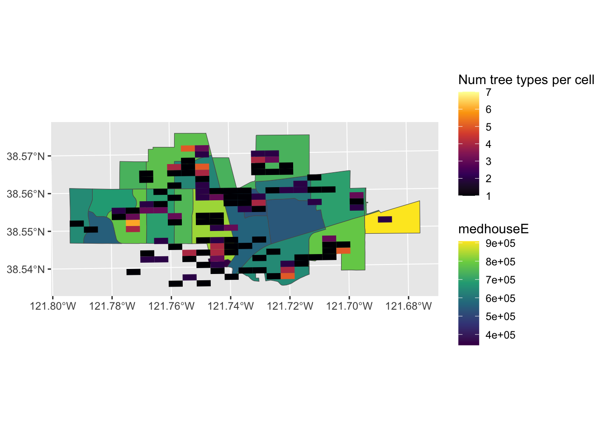

Mapping fruit trees in Davis Example
Let’s look at the spatial distribution of fruit trees in Davis, and how this distribution pattern relates to population size and median housing value in Davis. In order to examine this, we will need to bring in US Census data for the City of Davis, as well as point data from fallingfruit.org
0.1 Bring in data
Bring in all datasets of interest. In our case, we are going to use three sources of data: 1) City of Davis boundary, 2) census tract data for population and median housing value, and 3) fallenfruit.org fruit tree locations.
# You will need to sign up for a Census API Key if you are interested in pulling in US Census data
## Request an API key here: https://api.census.gov/data/key_signup.html
#census_api_key("3f1a61d7b9d2f870de53940d461dda896938261b", install = TRUE) #now stored in my R environment
# The tigris packages provides a way to directly download incorporated city footprints
## Pull in in places data for California
pl <- places(state = "CA", year = 2020, cb = FALSE)
## Now let's just isolate the boundary for the City of Davis
davis <- pl %>%
filter(NAME == "Davis")
## Take a look at the dataframe
glimpse(davis)
# Let's also pull in some census tract data from the City of Davis
## First, let's look at what variables are available
v20 <- load_variables(2020, "acs5", cache=TRUE) # load variable options
## Now that we have chosen our variables of interest, let's pull in that data
ca.tracts <- get_acs(
geography = "tract",
year = 2020, # final year
variables = c(totp = "B01003_001", #median income
medhouse = "B25077_001"), #Median housing value for owner-occupied housing units
state = "CA",
output= "wide",
survey = "acs5", #this loads the data from the last 5 years of acs records
geometry = TRUE,
cb = FALSE
)# Now bring in fallingfruit.org
## I went onto the website and directly downloaded the csv file
fruit <- read.csv("data/data.csv")0.2 Data wrangling
Oftentimes, you may want to subset spatial data relative to other spatial data. Some common spatial data wrangling tasks:
Intersect: keeps all polygons that intersect with the specified spatial boundary
Within: keeps all polygons that are wholy within the specified spatial boundary
Clipping: clips polygons based on specific spatial extents
Areal interpolation: “allocation of data from one set of zones to a second overlapping set of zones that may or may not perfectly align spatially”
For this example, I am only interested in the distribuition of fruit trees within Davis. The ms_clip function from rmapshaper is useful for clipping data to the spatial extents of Davis.
## Now I am only interested in Davis census tracts, so I will use the city of davis boundary to clip the tracts
## This function comes from the rmapshaper package
davis.tracts <- ms_clip(target = ca.tracts, clip = davis, remove_slivers = TRUE)
str(davis.tracts)0.3 Coordinate Reference System
Now that we have all of our data, we need to make sure that each dataset has the same Coordinate Reference System (CRS). The CRS has two parts:
- Geographic Coordinate System (GCS): three dimensional spherical surface. The GCS is made up of the ellipse (how the earth’s roundness is calculated) and the datum (coordinate system).
- Projected Coordinate System (PCS), or “projection”: Flattens the GCS into a two-dimensional surface
Both GCS and PCS need to be specified when working with spatial data! In order to do this, you will first need to find out what CRS your spatial dataframe was created in initially.
# Check CRS dataframes you want to overlay
st_crs(davis.tracts) #NAD 83
st_crs(davis.tracts)$proj4string #"+proj=longlat +datum=NAD83 +no_defs"
st_crs(davis.tracts)$units #NULL
st_crs(fruit) #NA
st_crs(fruit)$proj4string #NA
# So let's reproject the fruit and davis.tracts into the same projection
# Reprojection
## First, establish the CRS for the fruit dataset based on how it was created initially
## Since fruit is point data, the projected coordinate system is already set because latitude and longitude are the X-Y coordinates but we need to tell R this
fruit.sf <- fruit %>%
st_as_sf(coords = c("lng", "lat"),
crs = "+proj=longlat +datum=WGS84 +ellps=WGS84")
st_crs(fruit.sf)# +proj=longlat +datum=WGS84 +ellps=WGS84
## Now let's reproject so it is on the same coordinate system as the other dataframes
### By transform to proj = utm, now the CRS can handle distance measures
### UTM: Universal Transverse Mercator works in meters
fruit.utm <- fruit.sf %>%
st_transform(crs = "+proj=utm +zone=10 +datum=NAD83 +ellps=GRS80")
## Reproject davis.tracts to also be in UTM
davis.tracts.utm <- davis.tracts %>%
st_transform(crs = "+proj=utm +zone=10 +datum=NAD83 +ellps=GRS80")
# Great, nows lets check to see if all dataframes are on the same CRS
st_crs(fruit.utm) == st_crs(davis.tracts.utm) #TRUE0.4 Mapping the data
Finally, we are at the point where we can map the data! Let’s first see what mapping it with tmap looks like.
# Map the point data over the census tract data
## tmap
## tmap_mode("view")
tm_shape(davis.tracts.utm) +
tm_polygons(col = "medhouseE", style = "quantile", palette = "Blues",
title = "Median Housing Value ($)") +
tm_shape(fruit.utm) +
tm_dots(col = "green") +
#tm_text("types") +
tm_scale_bar(breaks = c(0, 1, 2), text.size = 1, position = c("left", "bottom")) +
tm_compass(type = "4star", position = c("right", "bottom")) +
tm_layout(main.title = "Fruit Trees in Davis",
main.title.size = 1.25, main.title.position="center",
legend.outside = TRUE, legend.outside.position = "right",
frame = FALSE)
Now let’s try mapping with leaflet.
## need to reproject davis.tracts data to be +proj=longlat
davis.tracts.sf <- davis.tracts %>%
st_transform(crs = "+proj=longlat +datum=WGS84 +ellps=WGS84")
leaflet() %>%
addTiles() %>%
addMarkers(data = fruit.sf, popup = ~as.character(types), label = ~as.character(types)) %>%
addPolygons(data = davis.tracts.sf,
color = ~colorQuantile("Blues", totpE, n = 5)(totpE),
weight = 1,
smoothFactor = 0.5,
opacity = 1.0,
fillOpacity = 0.5,
highlightOptions = highlightOptions(color = "white",
weight = 2,
bringToFront = TRUE))0.5 Fruit Tree Richness
What if we wanted to know which areas in Davis have many different species of fruit trees in one place? This is the kind of question that is easier to answer using raster type data. We want to ask, per unit area, how many different types of trees are there. This is easy to represent on a grid.
The following code is adapted from this blogpost by Luis D. Verde Arregoitia
Grid <- davis %>% #take our davis outline and draw a rectangle around it
st_make_grid(n = 25) %>% # let each side of the rectangle have 25 cells
st_cast("MULTIPOLYGON") %>% #make the grid
st_sf() %>%
mutate(cellid = row_number())
fruit.types <- fruit.utm %>% group_by(types) %>% # Here group fruit.utm by tree type, note that group by preserves the geometry, turning point classes into multi-point
summarise()
Grid <- Grid %>% #make sure our grid is matching the CRS of our other layers
st_as_sf(coords = c("lng", "lat"),
crs = "+proj=longlat +datum=WGS84 +ellps=WGS84") %>%
st_transform(crs = "+proj=utm +zone=10 +datum=NAD83 +ellps=GRS80")
richness_grid <- Grid %>%
st_join(fruit.types) %>% #join the fruit.types layer to the grid
mutate(overlap = ifelse(!is.na(types), 1, 0)) %>% #if type is not NA write 1
group_by(cellid) %>% #group by the cell ID's of the grid
summarize(num_types = sum(overlap)) #sum the number of types for each grid cell
ggplot(davis.tracts.utm) + #can plot these using GG plot if we are not worried about north arrow or scale bar (prob can do in tmaps but I don't know that package)
geom_sf(aes(fill = medhouseE)) + #lets add our housing values layer
scale_fill_viridis_c() +
ggnewscale::new_scale_fill() +
geom_sf(data = richness_grid, aes(fill = num_types), color = NA) + #add our grid
scale_fill_viridis_c(alpha = 1, option = "B", na.value = "#00000000", limits = c(1,7), name = "Num tree types per cell") #I used the limits and na.value fields to make cells where there are no trees clear, so that we can see the background map. 